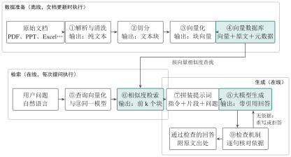

5.2 基础 RAG 流水线
一份 PDF 制度文件，要经过哪些步骤才能变成模型回答里的一句引用？本节沿着数据流动的方向，把基础 RAG 拆成数据准备、检索、生成三个阶段、九个步骤，逐一说明每一步的输入、处理和输出，并用三道例题估算切块数量、向量库存储量和上下文长度预算。结论是：基础 RAG 只需要大模型、嵌入模型、向量数据库和文档切分器四个组件就能搭起来，但每一步的选择都会限制最终回答的质量。
一个基本可用的 RAG 系统由四个组件组合而成：大模型负责生成回答，嵌入模型（embedding model）负责把文本变成向量，向量数据库（vector store）负责存储和查找向量，文档切分器（document splitter）负责把长文档切成小段。从系统角度看，它也可以分成两大部分：一个预训练好的基础模型，以及一个外挂的专业知识库。知识库可以由多种数据源构成——各种格式的文件、向量数据库、知识图谱，也可以直接接入 Elasticsearch 等现有搜索系统；其中向量数据库能检索高维向量、与大模型结合简单，是目前最常用的数据源。LangChain、LlamaIndex 等开发框架把这些组件封装成可组合的模块，使开发者用几十行代码就能搭出原型。
这些组件按三个阶段协同工作（图 5-2，表 5-2）：数据准备阶段确定数据源、提取并清洗数据、切分并写入数据库，在文档更新时离线执行；检索阶段根据用户问题从数据库中找出相关数据；生成阶段把检索结果与问题一起交给大模型生成回答。输出质量同时取决于数据质量和检索策略。

图 5-2 基础 RAG 流水线。上行为离线的数据准备，下行为每次提问时的检索与生成；每个框的第二行写出该步骤的输出。⑤必须使用与③相同的嵌入模型，否则查询向量与块向量不在同一个向量空间中
表 5-2 基础 RAG 的三个阶段
| 阶段 | 主要步骤 | 输出 | 关键选择 |
|---|---|---|---|
| 数据准备 | 解析、清洗、切分、向量化、入库 | 带元数据的向量索引 | 切分粒度、嵌入模型、元数据字段 |
| 检索 | 查询向量化、相似度检索（高级 RAG 还有改写、过滤、重排） | 按相关度排序的若干文本块 | 返回条数 \(k\)、检索方式、是否重排 |
| 生成 | 拼装提示词、生成、引用、检查 | 带引用的回答或拒答 | 提示词模板、上下文长度、拒答策略 |
5.2.1 数据准备：解析、清洗与切分
解析与清洗（步骤①） 输入是各种格式的原始文件，输出是干净的纯文本及其元数据。PDF 可能有多栏排版、页眉页脚、跨页表格和扫描页；Word 文件可能带修订痕迹和隐藏文字；网页中导航栏和广告可能占大半。解析器要按版面还原阅读顺序，把表格转成结构化文本，对扫描件做光学字符识别（Optical Character Recognition，OCR）；清洗则去掉页眉页脚、重复段落和乱码，同时记下文件名、章节标题、页码、生效日期、所属部门等元数据（metadata），供之后过滤、引用和权限控制使用。这一步不起眼，但如果跳过，后面切出来的是噪声而不是知识。
切分（步骤②） 输入是纯文本，输出是一组文本块（chunk），每块之后会得到一个向量。为什么要切？一是检索需要定位粒度：整本书只有一个向量，就无法指出答案在哪一页；二是模型的上下文窗口有限，只能放下少量片段。切分面临一个固有的矛盾：块太小，语义不完整，检索到了也缺少主语、时间等背景；块太大，一个块里混入大量无关内容，向量被稀释，检索不准，还占用上下文。常见的切分方式有三种：
固定长度切分：按字数或 token 数切，相邻块之间保留一段重叠（overlap），避免一句话被拦腰截断。经验取值为中文 300～500 字、英文 200～500 个 token，重叠 10%～20%（块长可以按字数或 token 数计，二者的换算取决于分词器，例 5-3 按约 1.4 字/token 估算）；
按结构切分：沿标题、段落、表格、代码块等自然边界切，例如合同按条款、论文按章节、代码按函数，通常优于固定长度切分；
语义切分：计算相邻句子的嵌入相似度，在语义明显转折处下刀。
另一种常用做法是小块检索、大块生成（small-to-big，也称父子块）：用小块计算向量、做匹配，命中后把它所在的父块（所在小节或整页）交给模型。这样既有细粒度的召回，又有完整的上下文。用图书馆打比方，切分就是把一本书拆成一张张索引卡片，卡片太小看不懂，太大又找不准。
设文档长度为 \(L_{\mathrm{doc}}\)，块长为 \(s\)，重叠为 \(o\)（\(o<s\)），相邻块起点之间的距离（步长）为 \(s-o\)，则一份文档切出的块数为 \[n_{\mathrm{chunk}} = \left\lceil \frac{L_{\mathrm{doc}}-s}{s-o} \right\rceil + 1 \qquad (L_{\mathrm{doc}}>s). \tag{5-1}\]
例 5-1 知识库会切出多少块
某单位的制度库有 2000 份文件，平均每份约 15 页、每页约 600 字。采用固定长度切分，块长 \(s=500\) 字，重叠 \(o=75\) 字（15%）。共会切出多少块？与不重叠相比多出多少？
| 步骤 | 算什么 | 算式 | 结果 | 这个数从哪来 |
|---|---|---|---|---|
| 1 | 每份文件长度 | \(15\times600\) | 9000 字 | 题设页数与每页字数 |
| 2 | 步长 | \(500-75\) | 425 字 | \(s-o\) |
| 3 | 每份块数 | \(\lceil(9000-500)\div425\rceil+1\) | 21 块 | 式 （5-1），\(8500\div425=20\) 恰为整数 |
| 4 | 总块数 | \(2000\times21\) | 42 000 块 | 文件数 × 每份块数 |
| 5 | 不重叠时总块数 | \(2000\times\lceil9000\div500\rceil\) | 36 000 块 | \(o=0\) 时每份 18 块 |
| 6 | 重叠带来的增量 | \((42\,000-36\,000)\div36\,000\) | 约 16.7% | 步骤 4、5 |
数据流向：页数与字数 → 文档长度 → 步长 → 每份块数 → 总块数。总块数决定了向量库的条目数（例 5-2）。重叠 15% 使块数和向量化开销多出约六分之一，换来的是句子不被截断。
5.2.2 向量化与向量数据库
向量化（步骤③） 输入是文本块，输出是一个 \(d\) 维实数向量，称为该文本块的嵌入（embedding）。嵌入模型通常是以 BERT（Bidirectional Encoder Representations from Transformers）为代表的 Transformer 编码器（近年也有基于解码器架构改造的嵌入模型）：它读入整段文字，把各 token 的隐藏状态汇聚成一个固定长度的向量（取特殊的 [CLS] 位置的隐藏状态，或对各位置做平均池化，取决于模型训练时的约定），\(d\) 就是模型输出的隐藏维度，常见取值为 768、1024 或 3072。训练时，嵌入模型被要求让“问题—相关段落”这样的正样本对向量靠近、无关样本对向量远离，因此语义相近的文本在向量空间中距离近。例如“苹果很好吃”与“苹果发布了新手机”都含“苹果”，但一个训练良好的嵌入模型会把前者放在水果、食物附近，把后者放在科技产品附近——它并不“理解”苹果，而是从大量语料中学到两种语境下的上下文完全不同。
衡量两个向量 \(\boldsymbol{u}\)、\(\boldsymbol{v}\) 有多相似，最常用的是余弦相似度（cosine similarity），即两向量夹角的余弦： \[\cos(\boldsymbol{u},\boldsymbol{v}) = \frac{\boldsymbol{u}\cdot\boldsymbol{v}}{\lVert\boldsymbol{u}\rVert\,\lVert\boldsymbol{v}\rVert} = \frac{\sum_{i=1}^{d}u_i v_i}{\sqrt{\sum_{i=1}^{d}u_i^2}\,\sqrt{\sum_{i=1}^{d}v_i^2}} . \tag{5-2}\] 取值越接近 1，方向越一致。工程上也用点积或欧氏距离；若向量预先归一化为单位长度，三者给出的排序相同。应使用嵌入模型训练时采用的那种度量。
嵌入模型的选择直接决定检索质量的上限。中文场景常用 BGE 系列[7]、M3E 等开源模型，商用服务有 OpenAI text-embedding-3、Voyage 等。选型时不能只看公开排行榜，还要看三点：语种是否匹配、领域是否匹配（法律、医疗、代码的用语差异很大）、最大输入长度是否覆盖块长（超出部分会被截断）。
向量数据库（步骤④） 输入是块向量、原文和元数据，输出是可供快速查找的索引。核心难题是：在数百万乃至数亿个向量中，怎样在毫秒级时间内找到与查询最相近的几十个？逐一计算的精确搜索耗时与库容量成正比，因此实际系统普遍采用近似最近邻（Approximate Nearest Neighbor，ANN）搜索，用少量准确率换取数量级的速度提升。常见的索引结构有：
IVF（Inverted File Index，倒排文件索引）：先把全部向量聚成若干簇，为每个簇中心记录属于它的向量列表，查询时只在离查询最近的几个簇里搜索（这里的“倒排”指“簇中心→向量列表”，与关键词检索的倒排索引不是一回事）；
HNSW（Hierarchical Navigable Small World，分层可导航小世界图）[8]：把向量连成多层近邻图，查询时从顶层稀疏图出发，逐层贪心地向更近的邻居移动；
PQ（Product Quantization，乘积量化）：把向量切成若干段，每段用一个码本编号代替，大幅压缩存储。
常见实现中，Faiss[9]、ANNOY 是嵌入到程序中使用的检索库；Milvus、Qdrant、Weaviate 是独立部署的向量数据库，Pinecone 是托管云服务；关系数据库 PostgreSQL 的 pgvector 扩展和搜索引擎 Elasticsearch 也提供向量检索。它们在系统中的位置见第 4.5 节。
例 5-2 向量库要占多少存储
沿用例 5-1 的 42 000 个块，嵌入维度 \(d=1024\)，每维用 32 位浮点数（4 字节）存储。(1) 向量本身占多少？(2) 若知识库扩大到 \(10^{8}\) 个块，又占多少？改用每维 1 位的二值向量后呢？（GB 按 \(10^9\) 字节计）
| 步骤 | 算什么 | 算式 | 结果 | 这个数从哪来 |
|---|---|---|---|---|
| 1 | 每个向量的字节数 | \(1024\times4\) | 4096 B | \(d\) × 每维字节数 |
| 2 | 4.2 万块的向量总量 | \(42\,000\times4096\) | \(1.72\times10^{8}\) B \(\approx\) 0.17 GB | 例 5-1 的总块数 |
| 3 | 对照：原文总量 | \(42\,000\times500\times3\) | \(6.3\times10^{7}\) B \(\approx\) 0.06 GB | UTF-8 中一个汉字 3 字节；按块数乘块长估算，重叠部分被重复计入 |
| 4 | \(10^{8}\) 块的向量总量 | \(10^{8}\times4096\) | \(4.1\times10^{11}\) B \(\approx\) 410 GB | 步骤 1 |
| 5 | 二值化后每向量字节数 | \(1024\div8\) | 128 B | 每维 1 位 |
| 6 | 二值化后总量 | \(10^{8}\times128\) | \(1.28\times10^{10}\) B \(\approx\) 12.8 GB | 压缩为 \(1/32\) |
数据流向：块数 × 每向量字节数 → 向量总量。小型知识库的向量只占零点几 GB，一台普通服务器的内存即可放下，此时向量部分约为原文的 2.7 倍；到亿级规模，FP32 向量达数百 GB，就需要 PQ、二值化（第 5.4.5 小节的语义哈希）或分布式部署。HNSW 等索引还要额外保存近邻图，实际占用比这里更多。
辨析
向量检索找的是“像”，不是“对”。有三类情况它经常出错：一是否定，“这个方案不是不可行”与“这个方案不可行”字面几乎相同，向量也很接近，意思却相反；二是编号与数值，错误码 TS-999 与 TS-990 在语义上都是“某个错误码”，向量难以区分；三是精确匹配，合同编号、产品型号差一个字符就是另一回事。这三类问题正是第 5.4.3 小节引入关键词检索的原因。
5.2.3 检索：从问题到候选片段
用户提问后，系统先用同一个嵌入模型把问题编码为查询向量（步骤⑤）。必须是同一个模型：用模型 A 建库、用模型 B 查询，两组向量不在同一个空间里，距离没有意义。随后在向量索引中做相似度检索（步骤⑥），取出与查询向量最接近的前 \(k\) 个块，再根据索引记录取回它们的原文与元数据，作为上下文交给生成阶段。这里的 \(k\) 是检索返回条数，注意与解码时 Top-K 采样的 \(k\)（第 3.9.5 小节）区分。
\(k\) 的取值是一个权衡：\(k\) 太小容易漏掉相关块，\(k\) 太大则混入噪声、挤占上下文。工程上常见的做法是先粗召回较多候选（例如 50～150 个），再用重排模型精选（第 5.4.4 小节），最后把 5～20 个块交给模型。
向量数据库不是唯一的数据源。表 5-3 列出 RAG 管道中常见的四类数据源，成熟系统往往同时使用多种，再合并结果（第 5.4 节）。
表 5-3 RAG 管道中常见的数据源
| 数据源 | 存储与检索方式 | 适合的数据 | 代表实现 |
|---|---|---|---|
| 向量存储 | 存储嵌入向量，按语义相似度搜索 | 文本、图像、音频等非结构化数据 | Milvus、Faiss、Qdrant |
| 关键词搜索 | 按关键词建倒排索引，返回包含关键词的文档 | 表格、文档等，需要精确匹配的场合 | Elasticsearch、Solr |
| 图数据库 | 以节点和边存储实体与关系，沿关系查询 | 实体关系密集的结构化数据 | Neo4j |
| 搜索引擎 | 调用公共或内部搜索服务 | 互联网上的最新信息 | Google、Bing 等公共搜索 |
5.2.4 增强与生成：把片段变成有据的回答
检索到的块不能直接丢给模型，而要和指令、问题一起拼装成提示词（步骤⑦），这一步就是“增强”。一个好的 RAG 提示词通常包含四层信息：
角色与任务：例如“你是公司的制度助手，只根据给定材料回答”；
材料：编号的检索片段，每条附来源、条款号与生效日期；
约束：材料中没有答案时回答“未找到”，不要推测；引用时标注片段编号；材料互相矛盾时并列说明；
问题：用户原始问题，必要时附改写后的版本。
[系统] 你是公司制度助手。只依据下方“材料”回答；材料中找不到答案时，
回答“未在制度中找到”。每句结论后用 [编号] 标注依据。材料互相矛盾时，
并列列出并注明各自的文件与生效日期。
[材料]
[1] 《差旅管理办法（2026 修订）》第 12 条（2026-01-01 生效）：……
[2] 《财务报销常见问题》第 3 问（2025-06-10 更新）：……
[问题] 2026 年出差住宿的报销上限是多少？为什么要强调“只依据材料”？因为模型在材料中找不到答案时，会用参数中的先验知识补上，而且补得毫无痕迹。明确要求“宁可说不知道”，是控制幻觉的第一道防线。
大模型据此生成回答（步骤⑧），并在每句结论后标注 [1]、[2] 这样的引用编号，用户可以点开原文核对。引用把信任从模型转移到可验证的来源上，许多企业级 RAG 的首要验收标准就是“每句话都能点回原文”。
最后一道工序是检查机制（步骤⑨）：把回答拆成句子，逐句回到检索片段中核对——这句话在片段中有没有依据？引用编号是否对应？核对不通过就重新生成，或降级为“未找到”。核对可以用规则（检查编号是否存在）加一次模型调用（判断某句是否被某片段支持）完成。它会增加延迟和一次调用成本，但这是把“看起来有据”变成“确实有据”的关键一步。
例 5-3 上下文里能放几个块
某模型的上下文窗口为 8192 个 token。系统指令约 400 token，问题及其改写约 100 token，保留的多轮对话历史约 1200 token，为回答预留 1500 token。每个块 500 字，本例假设该模型的分词器平均约 1.4 字/token（实际比值因分词器与文本而异），约 360 token；每块再附编号、来源、日期约 30 token。最多能放几个块？
| 步骤 | 算什么 | 算式 | 结果 | 这个数从哪来 |
|---|---|---|---|---|
| 1 | 固定开销 | \(400+100+1200+1500\) | 3200 token | 指令、问题、历史、预留输出 |
| 2 | 留给材料的预算 | \(8192-3200\) | 4992 token | 窗口减固定开销 |
| 3 | 每块 token 数 | \(500\div1.4+30\) | 约 390 token | 正文约 357 token，按十位取整为 360 以留余量，再加元数据 |
| 4 | 最多块数 | \(\lfloor4992\div390\rfloor\) | 12 块 | 向下取整 |
数据流向：窗口 → 减去固定开销 → 材料预算 → 除以每块长度 → 块数上限。实际取 \(k\) 时还应低于上限、留出余量，因为“字/token”的比值随分词器和文本内容变化（英文、数字、代码与中文都不同）。若窗口扩大到 32K，块数上限可达约 75，但第 5.3.2 小节会看到，放得下不等于用得好。
一个完整的例子 把以上步骤串起来（示例为虚构）。员工问：“我们公司 2026 年出差住宿的报销上限是多少？”系统把问题编码为向量，在制度库中召回《差旅管理办法（2026 修订）》《财务报销常见问题》等片段，取最相关的 5 段，按上面的模板拼装提示词；模型回答“一线城市每晚不超过 600 元，其他城市不超过 450 元 [1]”，检查机制确认这句话能在片段 [1] 中找到依据，回答附上原文链接返回给员工。整个过程中模型参数没有任何变化，但回答正确且可以核查。